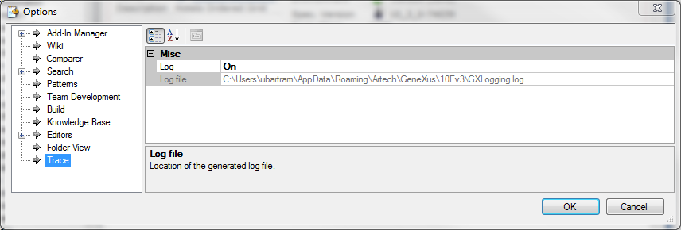

It is possible to trace GeneXus activity, registering the build and general output in a file, named GXLogging.log Log info Example2013-08-28 11:30:56,225 [6220] INFO GeneXus - == Database Creation Analysis started == 2013-08-28 11:30:56,594 [6220] INFO GeneXus - Processing ... 2013-08-28 11:30:56,614 [6220] INFO GeneXus - Searching for new or changed tables ... 2013-08-28 11:30:56,809 [6220] INFO GeneXus - Analyzing DatetimesTrn ... 2013-08-28 11:30:56,809 [6220] INFO GeneXus - Removing specification files ... 2013-08-28 11:30:56,809 [6220] INFO GeneXus - Specification files removed.arte 2013-08-28 11:30:56,878 [6220] INFO GeneXus - Generating messages for English ... 2013-08-28 11:30:57,061 [6220] INFO GeneXus - Generators messages generated. 2013-08-28 11:30:57,498 [6220] INFO GeneXus - Analyzing ImageTrn ... ... 2013-08-28 11:30:57,818 [6220] INFO GeneXus - Analyzing TrnD ... 2013-08-28 11:30:57,857 [6220] INFO GeneXus - Analyzing ABC2nivLevel1 ... 2013-08-28 11:30:57,902 [6220] INFO GeneXus - Analyzing ABC ... 2013-08-28 11:30:57,960 [6220] INFO GeneXus - Searching for deleted tables ... 2013-08-28 11:30:57,967 [6220] INFO GeneXus - Searching redundancy in ABC 2013-08-28 11:30:57,967 [6220] INFO GeneXus - Updating redundancy in ABC ... 2013-08-28 11:30:58,050 [6220] INFO GeneXus - Loading table and attribute properties ... ... 2013-08-28 11:30:58,107 [6220] INFO GeneXus - Saving specifications. 2013-08-28 11:30:58,123 [6220] INFO GeneXus - == Database Creation Analysis ended successfully == 2013-08-28 11:31:49,822 [6220] INFO GeneXus - == Specification started == 2013-08-28 11:31:50,032 [6220] INFO GeneXus - Processing enumerated domains... 2013-08-28 11:31:50,536 [6220] INFO GeneXus - Searching redundancy in ABC 2013-08-28 11:31:50,536 [6220] INFO GeneXus - Updating redundancy in ABC 2013-08-28 11:31:50,555 [6220] INFO GeneXus - Searching redundancy in ABC2nivLevel1 2013-08-28 11:31:50,556 [6220] INFO GeneXus - Updating redundancy in ABC2nivLevel1 2013-08-28 11:31:50,557 [6220] INFO GeneXus - Searching redundancy in TrnD 2013-08-28 11:31:50,557 [6220] INFO GeneXus - Updating redundancy in TrnD 2013-08-28 11:31:50,563 [6220] INFO GeneXus - Searching redundancy in TrnTestAskRule How to enable this trace?GeneXus Menu -> Tools -> Options -> Trace -> Log = On  At previous versions of GeneXus, this option was not available. See how to enable in GeneXus X Evolution I and GenXus X Evolution 2 here Note: GXLogging.log will be created under %APPDATA%\Artech\GeneXus\<GXVersion> for Evolution 3 and will be created under %APPDATA%\GeneXus\GeneXus\<GXVersion> for V15. Tip: adding the following line to environment.config file (available under the previously mentioned folder>) inside tag <General>, processId will be shown at GeneXus' output window: <add key="ShowProcessId" value="True" /> What log files are generated?By default, GXLogging.log file is generated. When it reaches 9 Megabytes it's renamed as GXLogging.1 and Gxlogging.log is created. This process is repeated four times. To change these values (i.e. to increase the size limit or the quantity of files) you can change gxlogging.config (file located under GeneXus installation folder): <maximumFileSize value="9000KB" /> <maxSizeRollBackups value="4" /> Previous Versions |